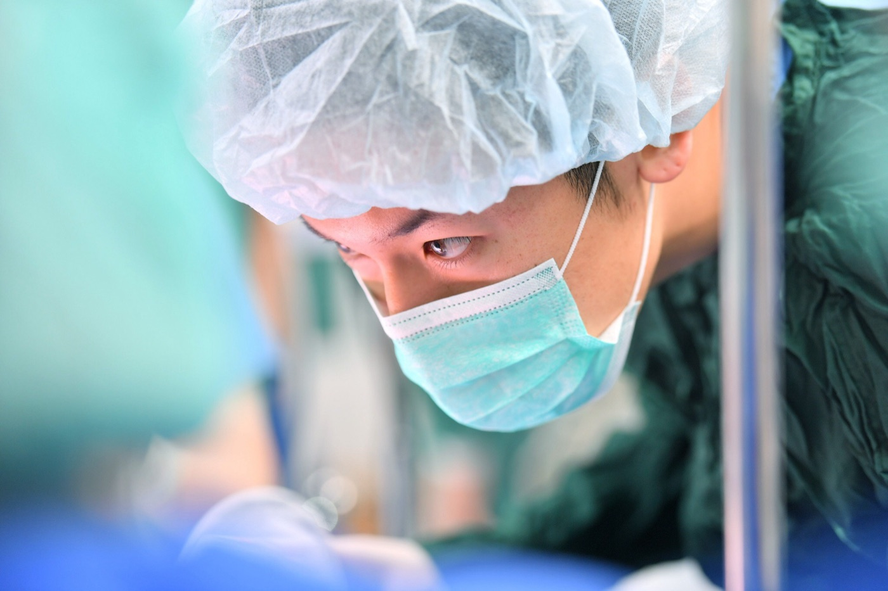

痛みを取ることは、我慢の量を減らすためだけの配慮ではありません。それは「効果」に直結する、治療設計の問題です。
医療脱毛も、レーザー治療も、マイクロニードルRFも、HIFU も——効果の大きさは、多くの場合「どれだけのエネルギーを、狙った深さに、必要な範囲へ届けられたか」で決まります。そして、そのエネルギーはほぼ例外なく、痛みと引き換えに増えていきます。
つまり痛みを取り除けないクリニックは、施術のたびに次の二択を迫られることになります。
厄介なのは、A を選んでも患者さんにはその場でわからないことです。出力を落とした施術は「痛くなかった」という良い印象すら残します。効果が足りないと気づくのは、数か月後に「思ったより減っていない」と感じたときです。
では、なぜ多くの施設はこの二択から抜け出せないのか。そして、抜け出そうとして麻酔を導入した施設で、なぜ事故が起きているのか。次章で、公的機関と学会が公表している資料をもとに整理します。
私たちは麻酔科医の管理下で、外科手術を何時間でも安全に行えるレベルの麻酔器・生体モニター・急変対応体制を整えた上で、医療脱毛と肌治療を提供しています。「効果は高いが痛い」施術を、本来の設定のままで受けていただくためです。
「麻酔科医が麻酔をかけていない」という体制の問題です。これは私見ではなく、厚生労働省の検討会と日本麻酔科学会が、公式の文書で指摘していることです。
「周術期における循環器系及び呼吸器系管理の経験が少なく術中出血や呼吸不全等の緊急事態に対応できない医師が（全身麻酔下での）手術を行ったり、緊急時の対応ができる病院等との連携体制が構築されていない状態で侵襲性が高い治療が行われている事例など、生命・健康に対するリスクが非常に高い事例についても報告された。」
「全身管理の経験がない医師による全身麻酔下での手術や、緊急時の対応ができる病院等との連携体制が構築されていない事例等、安全な医療を提供する上での最低限の医療の質が担保されているかさえ疑わしい事例が存在し、美容医療に起因する死亡事例が起きていることも報告された。」
美容医療の現場に、麻酔の専門家はほとんどいません。麻酔科医が在籍するクリニックは、業界全体の1%にも満たないのが現実です。その結果、麻酔の十分な経験がないまま施術医が麻酔を兼任し、急変時のリスクマネジメントが追いつかない——という構造が生まれます。
ここで多くの方が誤解されているのが、「全身麻酔は危ないが、眠らせるだけの鎮静なら安全」という考え方です。麻酔科学の立場から言えば、これは成立しません。
「鎮静は，自然睡眠とはまったく異なる。自然睡眠では，呼吸や循環が危うくなるような事態になると目が覚めて対処できる。（中略）しかし，薬剤作用により誘導される鎮静では，一見，自然睡眠と同じように見えるが，生理学的な状態とはまったく異なる。少量の鎮静薬によっても上気道閉塞が生じる可能性があり，患者の持つ病態によっては呼吸停止から心停止に至る危険性が存在する。」
同ガイドは、鎮静の深さを4段階に分類したうえで、その境界は「一連のもの」であり、明確に区切れないと述べています。下の表で注目していただきたいのは、深鎮静の列です。まだ「全身麻酔」に至っていない段階で、すでに気道への介入が必要になりうる状態に入っています。
| 最小鎮静 | 中等度鎮静 | 深鎮静 | 全身麻酔 | |
|---|---|---|---|---|
| 反応性 | 呼びかけに正常に反応する | 呼びかけ，接触刺激で合目的的に反応 | 繰り返し，有痛性刺激後，合目的的に反応 | 有痛性刺激で未覚醒 |
| 気道 | 影響されない | 介入不要 | 介入必要なことがある | しばしば介入必要 |
| 自発呼吸（換気） | 影響されない | 適切 | 不十分なことがある | 頻繁に不十分 |
| 心血管機能 | 影響されない | 通常は維持 | 通常は維持 | 障害されることがある |
日本麻酔科学会「安全な鎮静のためのプラクティカルガイド」2章 表「鎮静と全身麻酔の分類と定義」より作成。同ガイドは中等度鎮静と深鎮静の間（表内の金色の線）について「反応性，気道，呼吸において大きく異なり，その安全性を考慮すると，ここでの区分は重要である」としています。
鎮静薬の投与量と患者ごとの反応の差によって、中等度鎮静を目標にしていても容易に深鎮静へ、さらには全身麻酔の領域へ達します。「うちは全身麻酔ではないから安全」という説明は、麻酔科学的には根拠になりません。
眠っている患者さんに起こる緊急事態は、痛みではありません。気道閉塞・低換気・呼吸停止、そして胃の内容物が気道に流れ込む誤嚥です。いずれも数分の遅れが結果を分けます。絶食の指示を厳格に守っていただくのは、このためです。
これは推奨ではなく要件です。同ガイドは、患者の看視に専念する担当者の配置を推奨度A——「必ずしなければならない」——としています。施術に集中している医師は、モニターを見続けることができません。兼任とは、見張り役が不在であることと同じです。
「あの薬は危ない」という議論は本質ではありません。鎮静薬・鎮痛薬はいずれも、気道・呼吸・循環という生命維持の機能そのものに作用します。安全を分けるのは、何を使うかではなく、誰がどんな体制で管理するかです。
「“鎮静は全身麻酔に準ずる”と言われており，麻酔科医が担当することが望ましいが，日本のみならず世界でも全症例には対応できていないのが現実である。（中略）多くは問題なく行われているが，ヒヤリハットを含めると危機的な状況が発生していることは，過去の事例が示している。そのため，すべての鎮静を麻酔科医が実施できなくとも，安全な鎮静管理体制への麻酔科医の関与が希求されている。」
麻酔科学会自身が「麻酔科医の関与が希求されている」と書いている領域が、いま美容医療です。私たちが麻酔科医を麻酔管理に専従させているのは、差別化のためではありません。眠っている患者さんの呼吸と循環を預かる以上、それが最低限の条件だと考えているからです。
※本セクションは、公的機関および学術団体が公表している文書に基づく業界全体の課題の解説であり、特定の医療機関を批判する意図はありません。
「全身麻酔」だけが選択肢ではありません。施術の内容・時間・痛みの強さ、そして患者さんご自身の不安の程度に応じて、麻酔科医が最適な深さを設計します。
精神的に落ち着きをもたらし、痛みの緩和効果があります。意識は保たれたまま、緊張と不安がやわらいだ状態で施術を受けられます。
意識を保ったまま、うとうとした半覚醒の状態になります。痛みへの不安や恐怖心を和らげ、施術中の記憶も残りにくくなりますが、意識が完全に消えるわけではないため、強い刺激に対しては痛みを感じることがあります。
意識が完全に消失し、全身の痛みを消失させます。施術中の痛みはありません。気道と呼吸・循環を麻酔科医が管理下に置いた状態で行います。
亜酸化窒素（笑気ガス）を吸入する、もっとも軽い鎮静です。30分単位での併用が可能で、痛みが比較的軽い施術や、他の麻酔の導入前の緊張緩和に用います。
| 麻酔の種類 | 意識 | 施術中の痛み | 主な適応 | 絶食 | 当日の運転 |
|---|---|---|---|---|---|
| 全身麻酔 | 完全に消失 | なし | 針脱毛の広範囲、VIO・ヒゲの高出力照射、ポテンツァ、ミラドライ、糸リフト、複数施術の同日実施 | 必要 | 不可 |
| 静脈麻酔 | あり（うとうとした半覚醒状態） | 軽減されるが、強い刺激では感じることがある | レーザー脱毛、ピコレーザー、ウルトラセルZi、各種注入治療 | 必要 | 不可 |
| リラックス麻酔 | あり（緊張が緩和した状態） | 緩和される | 痛みが中等度の施術、注射への不安が強い方 | 要相談 | 不可 |
| 笑気麻酔 | あり（ふわふわした感覚） | やわらぐ | 短時間の施術、導入前の緊張緩和 | 不要な場合が多い | 要相談 |
※適応は目安です。施術内容・範囲・所要時間・既往歴によって、診察のうえ麻酔科医が最終的に判断します。
脱毛は「痛みを取ると効果が変わる」代表的な施術です。レーザーも針も、毛根を確実に破壊できるだけのエネルギーを届けて初めて成立します。
アレキサンドライトレーザーと Nd:YAG レーザーの2波長を、肌質・毛質・部位に応じて使い分ける医療レーザー脱毛機です。高いエネルギーを照射して毛根（毛乳頭・バルジ領域）を破壊することで、サロン脱毛では得られない長期的な減毛効果を目指します。冷却ガスによる肌表面の保護機構を備えています。
レーザー脱毛の効果は照射出力（フルエンス）に強く依存します。毛が濃く密度の高い部位——ヒゲ、VIO、男性の胸腹部・背中——ほど発生する熱量が大きく、痛みも比例して強くなります。痛みを基準に出力を決めると、もっとも効果を出したい部位ほど設定を落とすことになりかねません。麻酔下では、肌の安全域の範囲内で必要な出力を選択でき、1回あたりの効率を落とさずに済みます。また、途中で休憩を挟まずに広範囲を一度に照射できるため、施術時間そのものも短くなります。
毛穴に極細の針を刺し、電気や高周波のエネルギーを流して毛根を破壊する脱毛方法です。毛根を直接破壊するため、同じ毛穴からはもう毛が生えない仕組みです。毛の色（メラニン）に反応させる方式ではないため、白髪・金髪・産毛にも効果があり、レーザーが反応してしまうタトゥー部位にも施術できます。1本ずつ処理するのでミリ単位のデザイン脱毛も可能で、レーザーで硬毛化した毛の対処にも用いられます。
針脱毛は「チクチク」「パチパチ」とした痛みを、毛1本ごとに繰り返し受ける施術です。痛みの総量が処理できる本数の上限を決めてしまうため、無麻酔では1回の施術で進められる範囲がどうしても限られ、完了までの回数と期間が伸びます。麻酔下であれば、痛みではなく施術時間を基準にまとまった本数を一度に処理できます。レーザーが効かない白髪や産毛を根本的に解決したい方、レーザー脱毛の仕上げとして残った毛を処理したい方にとって、現実的な選択肢になります。
肌治療でも構図は同じです。針の深さ、照射のショット数、注入する本数——効果を決める変数のほとんどが、痛みによって制限されます。
極細の針を皮膚に刺入し、先端から高周波（RF）を流して真皮に熱刺激を与える治療。ニキビ跡・毛穴・肌質改善などに用います。
高密度焦点式超音波を皮下の複数の層に照射し、たるみの引き締めを図る治療。SMAS 層への照射が特徴です。
ピコトーニング／ピコフラクショナル／ルビーフラクショナル／ピコシャワー／ピコスポットに対応。シミ・肝斑・肌質改善、アートメイクや刺青の除去にも用います。
マイクロ波を照射して腋窩の汗腺（エクリン腺・アポクリン腺）にはたらきかける、ワキ汗・ワキガの治療です。
高周波によって皮膚深部を加熱し、引き締めとハリの改善を図る治療です。
溶ける糸を皮下に挿入し、たるみを物理的に引き上げる治療です。
ヒアルロン酸や有効成分を、肌の浅い層へ細かく多数注入して、うるおいとハリを補う治療です。
肌の再生や質感の改善を目的とした注入治療。複数回のコース設計が前提になることが多い治療です。
しわ・ボリューム・エラや多汗症など、部位と目的に応じて用いる注入治療です。
部分痩せを目的に、皮下脂肪へ薬剤を注入する治療です。
※上記のほか、トライフィル・プロ、プルリアルデンシファイ、ボライトなども麻酔下での施術対象です。取り扱い施術・対応院は変更される場合がありますので、最新の情報は LIGHT CLINIC 公式サイト をご確認ください。
美容医療でのトラブルの多くは、施術そのものではなく麻酔管理の体制に起因します。施術医が麻酔を兼任し、急変時の対応が追いつかない——その構造をつくらないことが、私たちの前提です。
施術を行う医師とは別に、日本麻酔科学会 麻酔科専門医の資格を取得した麻酔科医が麻酔管理に専従します。国立循環器病研究センターで心臓大血管手術の麻酔と重症患者の全身管理に従事してきた医師が、呼吸と循環を連続してモニタリングします。施術者が麻酔を兼任することはありません。
「美容クリニックだから簡易な設備で」という考え方は取りません。外科手術を長時間行える水準の麻酔器とモニタリング機器、急変時に必要な薬剤・器材を常備した状態で麻酔を導入します。
既往歴・内服薬・アレルギー歴・過去の麻酔経験・悪性高熱症の家族歴などを診察で確認し、必要に応じて検査を行います。安全に麻酔をかけられないと判断した場合は、麻酔を伴わない方法をご提案するか、施術自体をお断りすることがあります。
麻酔の管理は、薬を止めた時点では終わりません。意識・呼吸・循環が安定し、ご自身で安全に帰宅できる状態を確認するまでが麻酔科医の担当範囲です。回復室でのモニタリングを経てからのご帰宅となります。
抽象的な安心の話ではありません。日本麻酔科学会が定めた「安全な鎮静のためのモニタリング指針」は、深鎮静中に満たすべき項目を具体的に列挙しています。麻酔を受ける施設を選ぶときは、この水準が満たされているかをご確認ください。
安全な体制は、放っておいて存在するものではありません。誰かが、どこかで身につけた基準を持ち込んで、初めて成立します。

私が麻酔を学んだのは、美容医療の現場ではありません。
国立循環器病研究センターは、日本の循環器医療の中核施設です。私はそこで、心臓大血管手術の麻酔管理と、重症患者の全身管理を担当していました。心臓を扱う手術では、血圧が数十秒で崩れます。モニターの数値ひとつを読み違えることが、そのまま結果に直結する。そういう現場です。
そこで身についたのは、手技よりも先に 「安全は最初から設計しておくもの」 という考え方でした。急変してから対応を考えるのでは間に合いません。起こりうることを事前に洗い出し、必要な人員・機器・薬剤を配置し終えてから麻酔を始める。それが当たり前の環境にいました。
美容医療に関わるようになって驚いたのは、その設計がほとんど存在しないことでした。麻酔科医が在籍するクリニックは、業界全体の1%にも満たない。痛みへの配慮は「我慢してもらう」か「出力を下げる」かで済まされ、眠らせる場合も、施術医が片手間に薬を足している——そうした場面を見てきました。
ですから私が美容医療で麻酔を担当するとき、やっていることは手術室と変わりません。事前に全身を評価し、手術室と同等の麻酔器とモニターを整え、麻酔科医は麻酔だけを担当し、覚醒して安全に帰れる状態になるまで見届ける。特別なことをしているつもりはありません。麻酔とは本来そういうものだ、というだけです。
京都で最も救急搬送を受け入れる病院で、2年間三次救急の現場に立つ。事故・急変・発作——「迷っている時間こそが最大のリスクになる」ことを叩き込まれ、重症患者の対応に明け暮れた。
専門医も設備も限られた島で「この患者さんを診られるのは自分しかいない」という重さを背負い、医師としての総合力と覚悟を磨く。限られた条件のなかで最善の安全を組み立てる経験は、いまの診療の礎になっている。
全身麻酔・区域麻酔・硬膜外麻酔から周術期管理まで、手術室の最前線で研鑽を積む。数値と手技だけを頼りに患者さんの命を預かる緊張感が、その後の医療観すべての原点になる。
日本の循環器医療の中核施設で、心臓大血管手術の麻酔管理と重症患者の全身管理に従事。経食道心エコー（JB-POT 認定）を用いた高度なモニタリングを担当。呼吸と循環を秒単位で読み続ける、麻酔科医としてもっとも緊張度の高い領域。
先天性心疾患の子どもたちを救う取り組みに関わり、海外での医療支援活動にも従事。文化も設備も異なる環境で、限られた条件のもとに安全を組み立てる経験を重ねる。
循環器麻酔・集中治療での研鑽を積み重ね、麻酔科専門医の資格を取得。
2022年に大阪院を開院。2023年にはメンズ部門を立ち上げ、麻酔科医のコントロール下での無痛治療という領域を確立。現在は大阪・名古屋・新宿・表参道・福岡の5院体制で、総合監修医として診療品質と安全管理を統括している。
麻酔を伴う施術には、通常の美容施術にはない準備が必要です。特に絶食は、安全に直結する最も重要な項目です。
ご希望の施術内容を確認し、既往歴・内服薬・アレルギー歴・過去の麻酔経験などを伺います。そのうえで、麻酔科医が全身麻酔・静脈麻酔・リラックス麻酔のいずれが適切かを判断し、リスクを含めてご説明します。
施術予定時刻の5時間前から食事を摂らないでください。飲み物は施術2時間前から制限となります。胃の内容物が残っていると、麻酔中の誤嚥という重大な合併症につながります。守られていない場合は、安全のため施術を延期させていただきます。
メイクはせずにご来院ください。コンタクトレンズは外していただきます。ヒールの高い靴は避け、ゆったりとした服装をおすすめします。アクセサリー類も外していただきます。
心電図・血圧計・パルスオキシメーターなどの生体モニターを装着し、点滴のルートを確保します。ここから麻酔科医による全身管理が始まります。
選択した麻酔を導入し、眠りに入っていただきます。施術中は麻酔科医が呼吸・循環・麻酔深度を継続して監視し、必要に応じて調整します。施術医は施術に専念します。
麻酔から目覚めたあと、回復室で状態が安定するまで休んでいただきます。麻酔の種類と施術内容によって必要な時間は異なります。
施術当日の車・バイク・自転車の運転はできません。公共交通機関でのご帰宅、またはご家族・ご友人のお迎えをご準備ください。判断力や反射が完全に戻るまでには時間がかかります。
下記は麻酔にかかる費用です。施術そのものの費用は別途必要となります。いずれも公的医療保険が適用されない自由診療です。
| 麻酔の種類 | 単位 | 費用（税込） |
|---|---|---|
| 全身麻酔 | 2単位まで／1回 | ¥88,000 |
| 静脈麻酔 | 2単位まで／1回 | ¥55,000 |
| リラックス麻酔 | 3〜4時間／1回 | ¥33,000 |
| 笑気麻酔 | 30分／1回 | ¥5,500 |
※3回〜15回の複数回プランによる割引設定があります。
※上記は自由診療（自費診療）であり、公的医療保険は適用されません。
※施術費用は別途必要です。麻酔の種類・単位数は施術内容と所要時間により決まります。
※料金は改定される場合があります。最新の料金・複数回プランの詳細は各院にお問い合わせください。
麻酔は安全性の高い医療技術ですが、リスクがゼロの医療は存在しません。起こりうることと、それに対する備えを事前にお伝えします。
該当する項目があっても、状態によっては麻酔が可能な場合があります。自己判断で諦めず、診察時に必ずお伝えください。逆に、該当がなくても診察の結果、安全のために麻酔をお断りすることがあります。
医療ダイエット専門クリニックとして全国5院。麻酔科医による無痛治療の対応院・対応日については、各院にお問い合わせください。
麻酔科医が現場にいることで、変えられることがあります。効果を諦めなくていい治療を、これからも広げていきます。